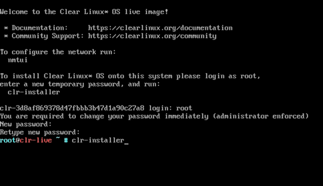
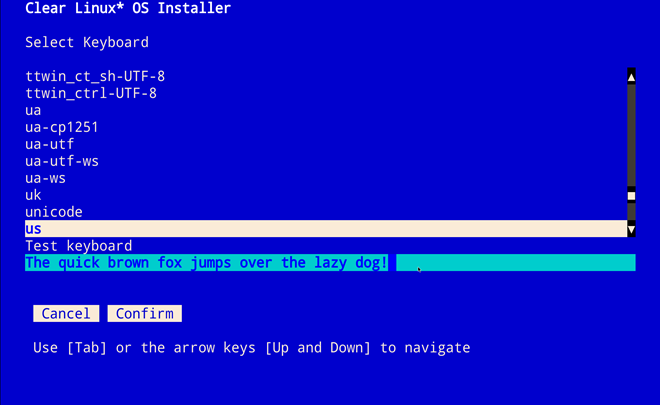

Install Clear Linux* OS on bare metal with live server
This page explains how to install Clear Linux* OS on bare metal from a bootable USB drive using a live server image.
System requirements
Before installing Clear Linux OS, verify that the host system supports the installation:
Download the latest Clear Linux OS live server image
Get the latest Clear Linux OS installer image from the Downloads page. Look for the
clear-[version number]-live-server.iso file.
- Verify and decompress the file per your OS.
- Follow your OS instructions to create a bootable USB drive.
Install Clear Linux OS on your target system
Ensure that your system is configured to boot UEFI. The installation method described below requires a wired Internet connection with DHCP.
Note
Alternatively, you can install Clear Linux OS over a wireless connection by first using nmtui. Follow the nmtui instructions shown in Figure 2.
Follow these steps to install Clear Linux OS on the target system:
Insert the USB drive into an available USB slot.
Power on the system.
Open the system BIOS setup menu by pressing the F2 key. Your BIOS setup menu entry point may vary.
Note
Clear Linux OS supports UEFI boot. Some hardware may list UEFI and non-UEFI USB boot entries. In this case, you should select the UEFI boot option.
In the setup menu, enable the UEFI boot and set the USB drive as the first option in the device boot order.
Save these settings and exit.
Reboot the target system.
This action launches the Clear Linux OS installer boot menu, shown in figure 1.

Figure 1: Clear Linux OS Installer boot menu
With Clear Linux OS highlighted, select Enter.
Launch the Clear Linux OS Installer
At the login prompt, enter root.
Follow the onscreen instructions, shown in Figure 2, and enter a temporary password.

Figure 2: root login
At the root prompt, enter clr-installer and press Enter.
Figure 3: clr-installer command
{kind=link}
Minimum installation requirements
To fulfill minimum installation requirements, complete the Required options. While not required, we encourage you to apply the Recommended options. Advanced options are optional.
Note
- The Install button is only highlighted after you complete Required options.
Main Menu
The Clear Linux OS Installer Main Menu appears as shown in Figure 4.

Figure 4: Clear Linux OS Installer
The Clear Linux OS Installer Main Menu has two tabs: [R] Required options and [A] Advanced options. Navigate between tabs using the arrow these shortcut keys:
- Shift+A for [A] Advanced options
- Shift+R for [R] Required options
To meet the minimum requirements, enter your choices in the Required options. After confirmation, your selections appear beside the >> chevron, below the menu options.
Required options
Choose Timezone
- From the Main Menu, navigate to Choose Timezone. UTC is the default.
- Select Enter.
- In Select System Timezone, use Up/Down arrows navigate to the desired timezone.
Press Enter to confirm.

Figure 5: Select System Timezone
Choose Language
From the Main Menu, navigate to Choose Language.
Select Enter.
In Select System Language, navigate to your desired language.
Press Enter to confirm.

Figure 6: Select System Language
Configure the Keyboard
From the Main Menu, select Configure the Keyboard.
Select Enter.
In Select Keyboard, navigate to the desired option.
Select Enter to Confirm.
Optional: In Test keyboard, type text to assure that the keys map to your keyboard.
Figure 7: Select Keyboard menu
{kind=link}
Configure Installation Media
From the Main Menu, select Configure Installation Media.
Choose an installation method: * Safe Installation * Destructive Installation * Advanced Configuration

Figure 8: Select Installation Media
Select Rescan Media to show available installation targets.
Safe Installation
Use this method to safely install Clear Linux OS on media with available space, or alongside existing partitions, and accept the Default partition schema. If enough free space exists, safe installation is allowed. See also Troubleshooting below.
Destructive Installation
Use this method to destroy the contents of the target device, install Clear Linux OS on it, and accept the Default partition schema.
Note
From the Select Installation Media menu, select Enable Encryption to encrypt the root filesystem for either option above. See also Disk encryption for more information.
Advanced Configuration
Use this method to manually configure partitions. These must meet Default partition schema. You may also choose Disk encryption during configuration of each partition.
Note
Advanced Configuration is available in the installer versions 1.2.0 and above.
From Select Installation Media, shown in Figure 8 above, select Advanced Configuration.
In Advanced Configuration, navigate to
/dev/sdaand then press Enter.Choose a partition method:
- Auto Partition Select this option to accept the
Default partition schema.
- Navigate to and press Confirm.
- Continue with installation configuration. Jump to Telemetry.
- Manual Partition Continue below.
- Auto Partition Select this option to accept the
Default partition schema.
{kind=link}
Manual Partition
We provide a simple example below.
Navigate to the unallocated media (e.g.,`/dev/sda`) until highlighted, as shown in Figure 9.
Press Enter to edit the partition.
The Partition Setup menu appears, shown in Figure 10.
Note
After adding the first partition, select Free Space to add another partition.
root partition
We configure the root partition as shown in Figure 10. Configuration of the root partition varies.

Figure 10: root partition
Navigate to Add and press Enter.
boot partition
We configure the boot partition as shown in Figure 11.

Figure 11: boot partition
Navigate to Add and press Enter.
swap partition
In the File System pulldown menu, select swap, and enter a label. We enter the minimum required size (e.g., 256M).

Figure 12: swap partition
Navigate to Add and press Enter.
Next, navigate to Confirm and press Enter, shown in Figure 13.
Manual partitioning is complete.
You may skip to the Telemetry section below.
{kind=link}
Disk encryption
For greater security, disk encryption is supported using LUKS for the any partition except /boot on Clear Linux OS. To encrypt the root partition, see the example below. Encryption is optional.
Encryption Passphrase
Clear Linux OS uses a single passphrase for encrypted partitions. Additional keys may
be configured post-installation using the cryptsetup tool.
Optional: Select [X] Encrypt to encrypt the root partition, as shown in Figure 14.

Figure 14: Encrypt partition
The Encryption Passphrase dialogue appears.
Note
Minimum length is 8 characters. Maximum length is 94 characters.

Figure 15: Encryption Passphrase
Enter the same passphrase in the first and second field.
Navigate to Confirm and press Enter.
Note
Confirm is only highlighted if passphrases match.
Telemetry
Telemetrics is a Clear Linux OS feature that reports failures and crashes to the Clear Linux OS development team for improvements. For more detailed information, visit our Telemetrics page.
Select your desired option on whether to participate in telemetry.
In the Main Menu, navigate to Telemetry and select Enter.
Select Tab to highlight your choice.
Select Enter to confirm.

Figure 16: Enable Telemetry
Recommended options
After you complete the Required options, we highly recommend completing these selected Advanced options at minimum:
- Manage User Assign a new user with administrative rights
- Assign Hostname Simplify your development environment
Skip to finish installation
After selecting values for all Required options, you may skip to Finish installation.
Otherwise, continue below. In the Main Menu, select Advanced options for additional configuration.
Advanced options
Configure Network Interfaces
By default, Clear Linux OS is configured to automatically detect the host network interface using DHCP. However, if you want to use a static IP address or if you do not have a DHCP server on your network, follow these instructions to manually configure the network interface. Otherwise, default network interface settings are automatically applied.
Note
If DHCP is available, no user selection may be required.
Navigate to Configure Network Interfaces and select Enter.
Navigate to the network interface you wish to change.
When the desired interface is highlighted, select Enter to edit.
Note
Multiple network interfaces may appear.

Figure 17: Configure Network Interfaces
Notice Automatic / dhcp is selected by default (at bottom).
Optional: Navigate to the checkbox Automatic / dhcp and select Spacebar to deselect.

Figure 18: Network interface configuration
Navigate to the appropriate fields and assign the desired network configuration.
To save settings, navigate to Confirm and select Enter.
Note
To revert to previous settings, navigate to the Cancel and select Enter.
Upon confirming network configuration, the Testing Networking dialogue appears. Assure the result shows success. If a failure occurs, your changes will not be saved.
Upon confirmation, you are returned to Network interface settings.
Navigate to and select Main Menu.
Optional: Skip to Finish installation.
Proxy
Clear Linux OS automatically attempts to detect proxy settings, as described in Autoproxy. If you need to manually assign proxy settings, follow this instruction.
From the Advanced options menu, navigate to Proxy, and select Enter.
Navigate to the field HTTPS Proxy.
Enter the desired proxy address and port using conventional syntax, such as: http://address:port.
Navigate to Confirm and select Enter.
To revert to previous settings, navigate to Cancel and select Cancel.
{kind=link}
Optional: Skip to Finish installation.
Test Network Settings
To manually assure network connectivity before installing Clear Linux OS, select Test Network Settings and select Enter.
A progress bar appears as shown in Figure 20.

Figure 20: Testing Networking dialogue
Note
Any changes made to network settings are automatically tested during configuration.
Optional: Skip to Finish installation.
Bundle Selection
On the Advanced menu, select Bundle Selection
Navigate to the desired bundle using Tab or Up/Down arrows.
Select Spacebar to select the checkbox for each desired bundle.

Figure 21: Bundle Selection
Optional: To start developing with Clear Linux OS, we recommend adding
os-clr-on-clr.Navigate to and select Confirm.
You are returned to the Advanced options menu.
Optional: Skip to Finish installation.
Manage User
Add New User
In Advanced Options, select Manage User.
Select Add New User as shown in Figure 22.
Optional: Enter a User Name.

Figure 23: User Name
Enter a Login.
Note
The User Login must be alphanumeric and can include hyphens and underscores. Maximum length is 31 characters.
Enter a Password.
In Confirm, enter the same password.
Optional: Navigate to the Administrative checkbox and select Spacebar to assign administrative rights to the user.
Note
Selecting this option enables sudo privileges for the user.
Select Confirm.
Note
If desired, select Reset to reset the form.
In Manage User, navigate to Confirm.
With Confirm highlighted, select Enter.
{kind=link}
Modify / Delete User
In Manage User, navigate to the user you wish to modify until highlighted, as shown in Figure 24.
Select Enter to modify the user.

Figure 24: Modify User
Modify user details as desired.
Navigate to Confirm until highlighted.
Note
Optional: Select Reset to rest the form.
Select Confirm to save the changes you made.
Optional: In Modify User, to delete the user, navigate to the Delete button and select Enter.

Figure 25: Delete User
You are returned to Manage User.
- Navigate to Confirm until highlighted.
- Select Enter to complete Manage User options.
Optional: Skip to Finish installation.
Kernel Command Line
For advanced users, Clear Linux OS provides the ability to add or remove kernel arguments. If you want to append a new argument, enter the argument here. This argument will be used every time you install or update a new kernel.
In Advanced Options, select Tab to highlight Kernel Command Line.
Select Enter.

Figure 26: kernel command line
Choose from the following options.
- To add arguments, enter the argument in Add Extra Arguments.
- To remove an argument, enter the argument in Remove Arguments.
Select Confirm.
Optional: Skip to Finish installation.
Kernel Selection
Select a kernel option. By default, the latest kernel release is selected. Native kernel is shown in Figure 27.
To select a different kernel, navigate to it using Tab.
Select Spacebar to select the desired option.
Navigate to Confirm and select Enter.
{kind=link}
Optional: Skip to Finish installation.
Swupd Mirror
If you have your own custom mirror of Clear Linux OS, you can add its URL.
In Advanced Options, select Swupd Mirror.
To add a local swupd mirror, enter a valid URL in Mirror URL:
Select Confirm.

Figure 28: Swupd Mirror
Optional: Skip to Finish installation.
Assign Hostname
In Advanced Options, select Assign Hostname.
In Hostname, enter the hostname only (excluding the domain).
Note
Hostname does not allow empty spaces. Hostname must start with an alphanumeric character but may also contain hyphens. Maximum length of 63 characters.

Figure 29: Assign Hostname
Navigate to Confirm until highlighted.
Select Confirm.
Optional: Skip to Finish installation.
Automatic OS Updates
Automatical OS updates are enabled by default. In the rare case that you need to disable automatic software updates, follow the onscreen instructions, shown in Figure 30.
In Advanced Options, select Automatic OS Updates.
Select the desired option.

Figure 30: Automatic OS Updates
You are returned to the Main Menu.
Save Configuration Settings
In Advanced Options, select Save Configuration Settings.
A dialogue box shows the installation configuration was saved to
clr-installer.yaml
Figure 31: Automatic OS Updates
Use the
clr-installer.yamlfile to install Clear Linux OS, with the same configuration, on multiple targets.
Finish installation
When you are satisfied with your installation configuration, navigate to Install and select Enter.

Figure 32: Select Install
Select reboot.
Note
If you do not assign an administrative user, upon rebooting, enter root and set the root password immediately.
When the system reboots, remove any installation media present.
Default partition schema
Create partitions per requirements in Table 1.
| FileSystem | Label | Mount Point | Default size |
|---|---|---|---|
VFAT(FAT32) |
boot | /boot | 150MB |
linux-swap |
swap | 256MB | |
ext[234] or XFS |
root | / | Size depends upon use case/desired bundles. |
Troubleshooting
For Configure Installation Media
If a warning message appears that no media or space is available after entering Configure Installation Media:
- Verify that target media has enough free space.
- Confirm the USB is properly connected to and mounted on target media.
- Review the size of existing partitions on the target media:
- Linux* OS: lsblk -a
- Windows* OS: diskpart, then list disk
- macOS* platform: diskutil list